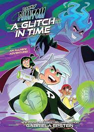

| INICIO | PRACTICA1 | DANNY PHANTOM | THE LOONEY TUNES |
|---|
|  |
|---|
Danny Phantom es una serie animada de televisión creada en 2004 por Butch Hartman para Nickelodeon, finalizada en 2007 fue producida por los Estudios Billionfold y distribuida por la compañía MTV Networks. El personaje principal, Danny Fenton, da un vistazo a un portal fantasma creado por sus padres y por accidente se vuelve mitad humano y mitad fantasma. Ahora Danny tiene que aprender, muchas veces con la ayuda de sus amigos, a usar sus nuevas habilidades y luchar para atrapar a los fantasmas y regresarlos a la zona fantasma, mientras que lucha día a día en el agonizante mundo adolescente. CIERRE DE LA SERIE¡¡¡ El martes 24 de enero de 2006, Butch Hartman anunció la decisión de Nickelodeon para cancelar la producción de Danny Phantom, dando la exposición un total 53 episodios en tres temporadas. Actualmente los fans anglosajones (y algunos hispanos que están en la comunidad) tienen los hashtag #BringbackDannyPhantom2018 y #GoGhostAgain traducidos como: "Devuelve Danny Phantom en 2018" y "Volverse fantasma de nuevo". Docenas de peticiones han sido firmadas y centenares de cartas enviadas. Los fans han comprado mucha mercancía de Danny Phantom en una tentativa para ganar más dinero, para tratar convencer a Nickelodeon que el programa es provechoso para justificar más episodios. Actualmente se sabe que no habrá nuevos episodios después el 53.
|
|---|
| © DERECHOS RESERVADOS DE AUTOR.IVON ENRIQUEZ FLORES No.L 9 GRUPO: 403 |
|---|